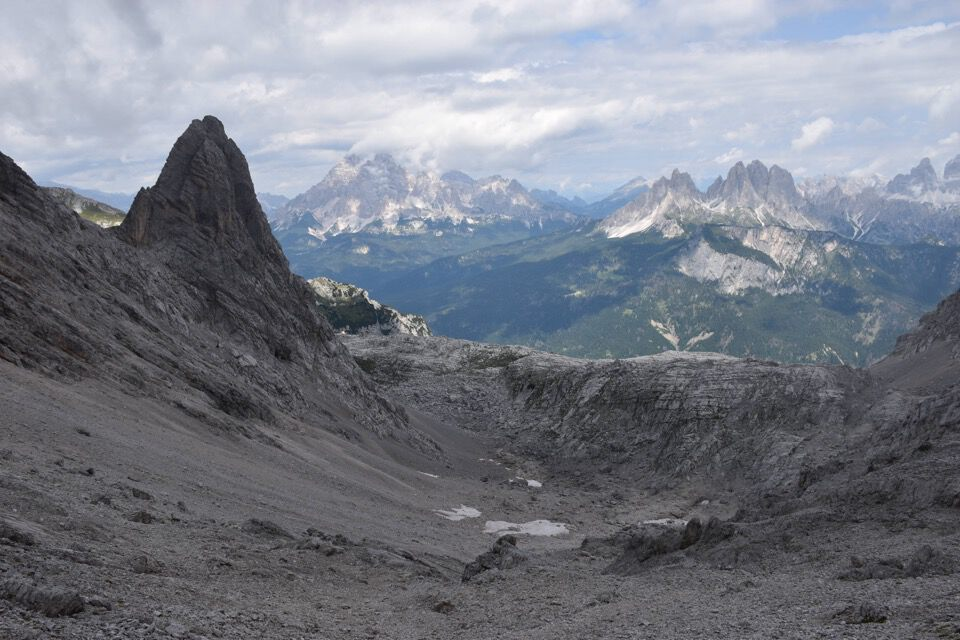

Giro «banale», svolgendosi tutto su sentieri segnati, ma di grande bellezza e molto istruttivo. M'interessava particolarmente mettere piede in val d'Óten: il versante Sud delle Marmarole è quello più selvatico, frequentato unicamente dagli ungulati e un tempo da cacciatori e pastori calaltini. C'è tutto un mondo da scoprire in questo versante!
Leggi l'interessante storia della conquista del Cimon del Froppa.
Entrando in val d'Óten appare maestosa la Cima del Tiziano, salita un mese fa.
Bastioni, mostruosi.
Lassù i contrafforti meridionali del M. Froppa: certo che mancano 1800m di dislivello!

Parete Sud del Monticello.

Un po' troppo in fretta arrivo al rif. Chiggiato, che dire, meraviglioso. È un luogo davvero bellissimo, e incredibilmente panoramico.
Ottimo punto di osservazione sulle Marmarole Sud.

Guardiamoci un po' attorno: la Cima di Vallonga Sud, pure salita un mese fa.

L'Antelao.


Da sx Pala di Meduce, Vallonga Sud, Monticello.

La parete Sud dei Bastioni: che sia questa la fantastica «gran cengia Sud-Est»?
Prendo il Sentiero degli Alpini per forcella Jau de la Tana, che mi ha veramente entusiasmato! È un vero e proprio sentiero di camosci che sfrutta i punti deboli del monte; particolarmente interessante m'é parso il tratto che attraversa i pendii in centro foto sullo sperone di Cima Salina.

La Val Salina che non si sale ma si attraversa a mezza costa.
Il rif. Chiggiato con i soliti tre.


La testata della Val de la Tana, luce fantastica.

L'antico sentiero delle «scale de Podos» e della «pala de Tiridela» risaliva la Val de la Tana dal fondovalle, evidetando il traverso dal rif. Chiggiato.
I colori sgargianti delle pareti.


Lo sperone finale, via naturale percorsa dagli ungulati.
Dopo quattro buone ore eccomi finalmente in forcella Jau de la Tana: qui vediamo i Lastoni delle Marmarole; a dx della Cima Nord di Valtana si nota il biv. Tiziano.
Imponente il Cimon del Froppa.

Cimon del Froppa: si vede tutto lo sviluppo della via comune.

Dalla forcella faccio un salto in cima al dirimpetto Monte Froppa.

Verso la val d'Óten dove sono partito, 1800m più in basso.
Il Monticello.
Scendo verso il biv. Fanton: ecco la val Baion, verso Auronzo.

Discesa per il tremendo Vallon del Froppa che già avevo percorso.

Verso la fine vedo una traccia, non può che portare sulla q2306 della Cresta d'Aieron, so che nell'altro versante c'è un altro sentiero che scende al rif. Chiggiato.
Allunghiamo, dopo 1900m di dislivello? Inizio a salire, dopo un po' consulto il telefono per sapere quando dislivello manca, giriamo i tacchi, per carità...

Vallon del Froppa, bellissima luce sulla Cresta degli Invalidi.
Calalzo con le Dolomiti d'Oltrepiave.

La cresta Nord di Cima Laste percorsa il giorno prima: non male come dislivelli per due giorni di fila!
Eccomi di nuovo giù in val d'Óten dopo una decina d'ore: qui le crode della val Montesela, col Monticello a sx.

L'alta Val de la Tana che ho risalito molte ore prima.
Particolare della parte finale del percorso: si sale sullo sperone a dx del canale, aiutati da qualche attrezzatura metallica.
Un saluto alla Cima del Tiziano...
...e al monte Froppa.

Il magico mondo delle Marmarole Sud.